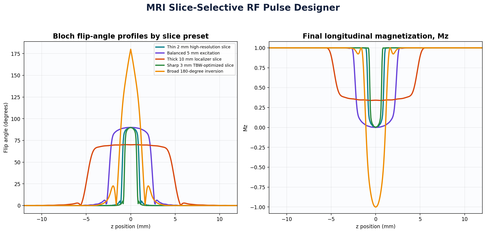

{kind=link}
What the MRI operator sees
The operator chooses clinical settings such as slice thickness in mm, flip angle in degrees, scan plane, and sequence type. The interface is designed around anatomy and image contrast, not raw RF waveforms.
Built an interactive simulator that connects what an MRI operator selects at the scanner console with the RF pulse and gradient design that excites a physical slice of tissue, including preset comparisons for different slice prescriptions.
The operator chooses clinical settings such as slice thickness in mm, flip angle in degrees, scan plane, and sequence type. The interface is designed around anatomy and image contrast, not raw RF waveforms.
The scanner converts those choices into a shaped B1 pulse, RF bandwidth, slice-selection gradient Gz, and timing. This project makes that pulse-design layer visible.
The simulator integrates the rotating-frame Bloch equation dM/dt = gamma M x Beff across positions from -10 mm to +10 mm, using a Hamming-windowed sinc RF pulse and constant Gz gradient.
Slice-selective excitation is how MRI targets a slab of tissue before readout. The RF spectrum and gradient together decide which positions are tipped into the transverse plane.
The output shows RF amplitude, RF spectrum, final magnetization, flip angle profile, and overlaid Bloch profiles for thin-slice, localizer, sharp-edge, low-gradient, and inversion scenarios.

| Clinical console setting | Hidden RF/gradient design | Shown in the simulator |
|---|---|---|
| Slice thickness (mm) | RF bandwidth and Gz are selected so only that slab resonates. | Target slice thickness, RF spectrum, flip angle profile. |
| Flip angle (degrees) | B1 pulse area is scaled to rotate the center spin by that angle. | Peak B1, center flip, final magnetization. |
| Scan plane and slice location | The gradient axis and RF center frequency are adjusted. | This simplified version models the z-axis only. |
| Sequence type | Pulse shape, gradient timing, echo timing, and readout are scheduled. | The app focuses on the excitation pulse before readout. |